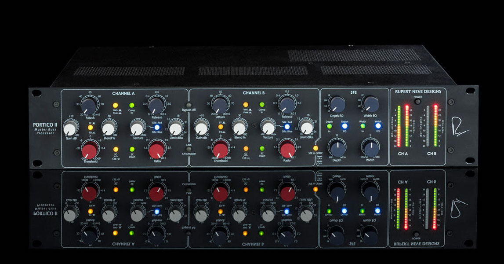
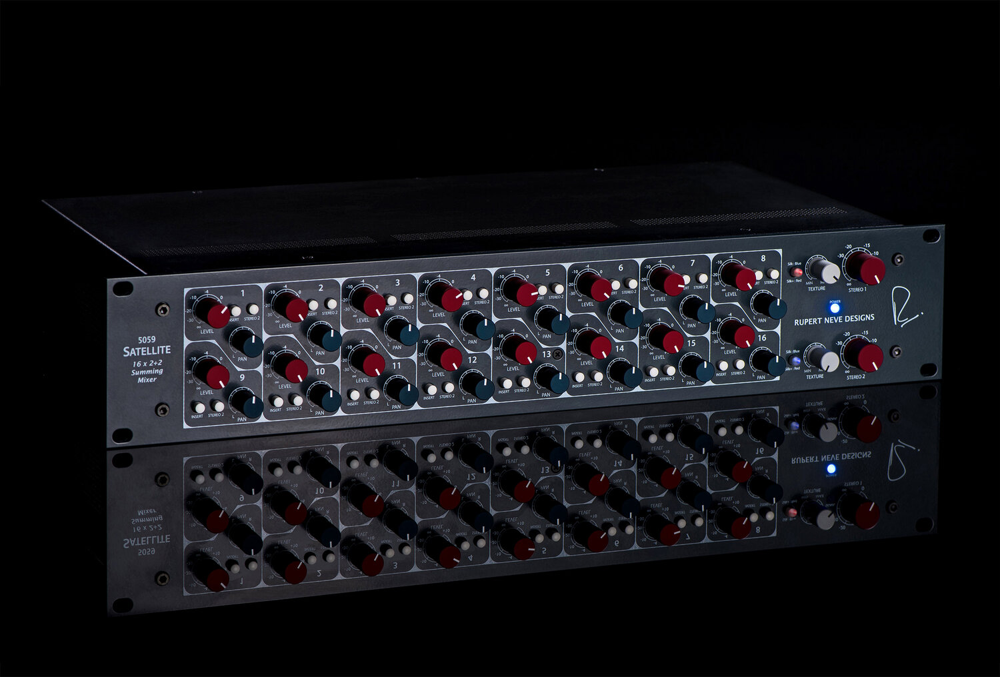
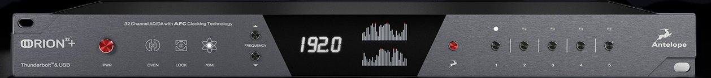
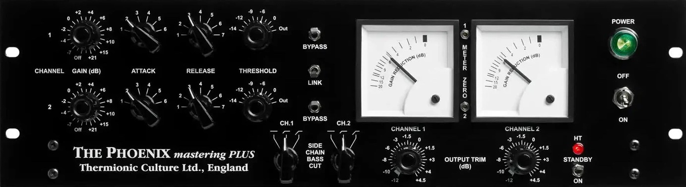
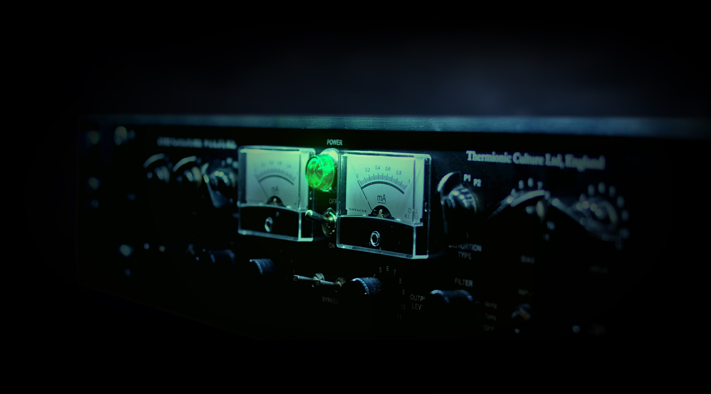
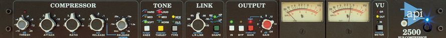
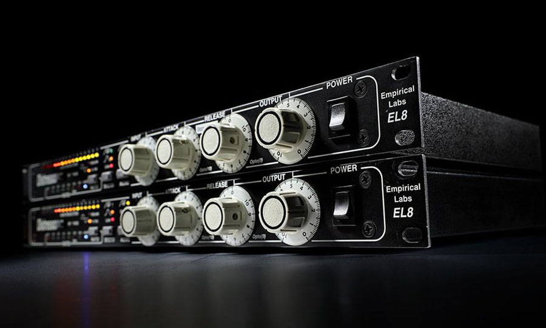
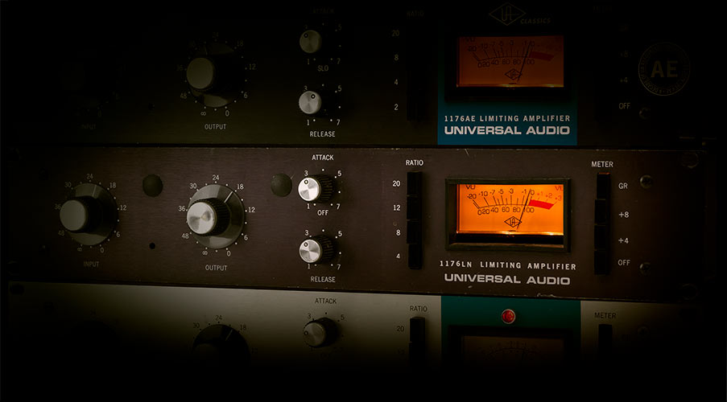
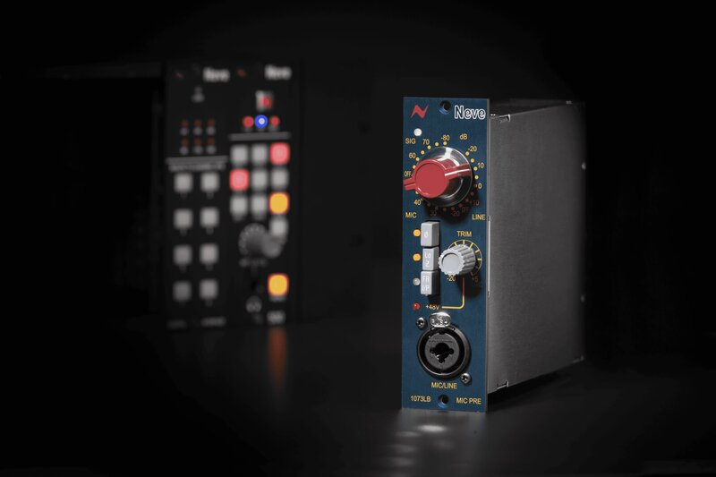

Mixing/Mastering
I offer professional mixing and mastering services designed to bring your music to life. Utilizing a hybrid mix setup with high-end analog gear, I ensure that every project benefits from a pristine signal path and the warmth and character that pro analog equipment can help deliver.
I specialize in genres including:
• Post-Metal
• Post-Black Metal
• Sludge
• Noise-Rock
• Hardcore
• Punk

Rupert Neve Designs Portico II
Master Buss Processor

5059 Satellite 16 x 2+2 Summing Mixer
16 x 2+2 Summing Mixer

Antelope Audio Orion 32+ Gen 3
32 Channels of State-of-the-Art Conversion

Thermionic Culture Phoenix
Premium Boutique Tube Compression

Thermionic Culture Vulture
Tube-Based Distortion

API 2500
Legendary Stereo Compressor

Distressor
Studio Staple

UAD 1176
Classic compressor

Neve 1073LB
Classic Preamp